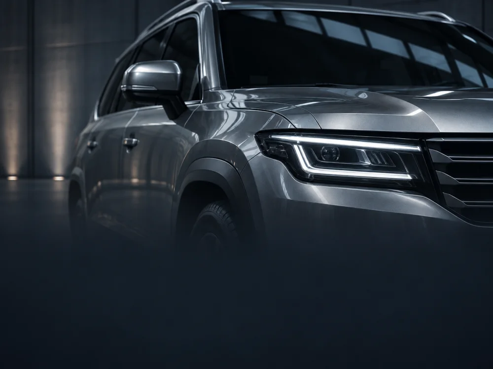

Experiência em cada etapa.
Profissionais e processos voltados à proteção, ao funcionamento e ao acabamento do seu carro.

Mais de 20 anos de história, uma fábrica de 6.000 m² e o compromisso de cuidar da sua segurança em cada detalhe.
Conheça nossa estruturaHá mais de 20 anos, a Hi-Tech reúne profissionais, tecnologia e fábrica própria para acompanhar cada etapa da blindagem — e continuar ao seu lado depois da entrega.
Profissionais e processos voltados à proteção, ao funcionamento e ao acabamento do seu carro.

Materiais, equipamentos e equipes reunidos em uma fábrica de 6.000 m², na Moóca.

Assistência, manutenção e revisões para acompanhar o seu blindado ao longo do uso.


Da montagem à inspeção final, nossa estrutura reúne as etapas do trabalho e as pessoas que cuidam do seu veículo.
Qualidade, responsabilidade ambiental e transparência fazem parte da forma como conduzimos nossas atividades.

Atender com qualidade e agilidade e melhorar continuamente o sistema de gestão e a eficácia da blindagem.
Considerar a proteção do meio ambiente nas atividades da empresa e na melhoria contínua da gestão.
Relatório publicado pela Hi-Tech referente ao segundo semestre de 2026.
Imagens dos compromissos geradas para fins ilustrativos.